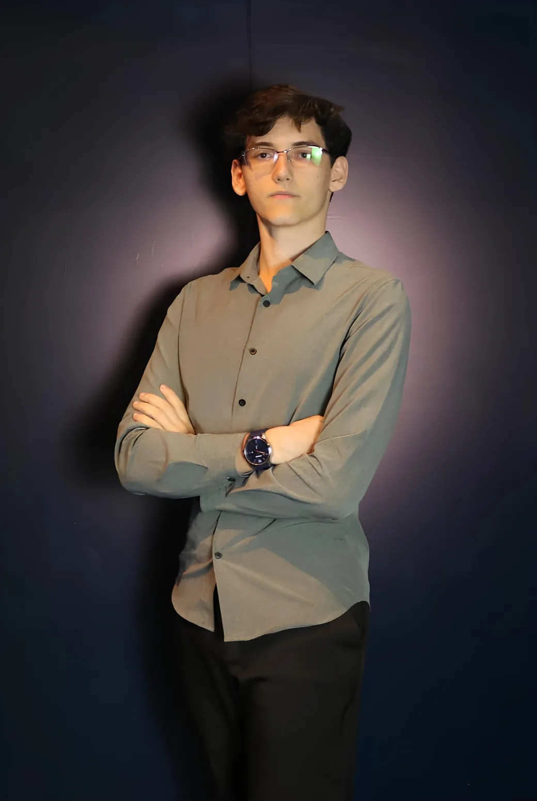
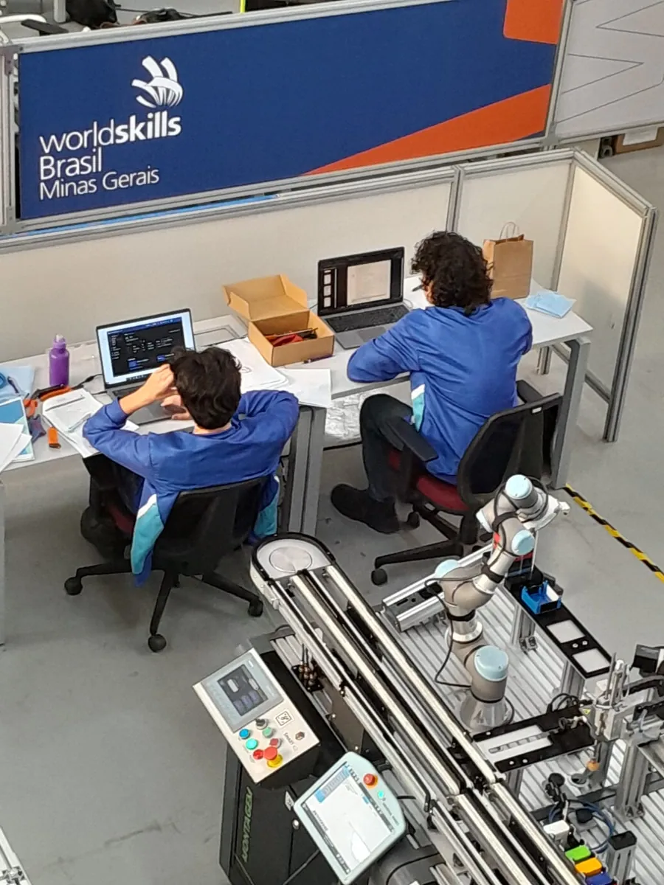
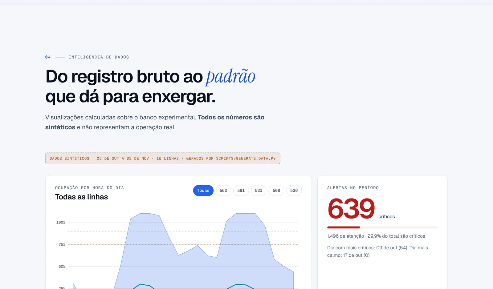
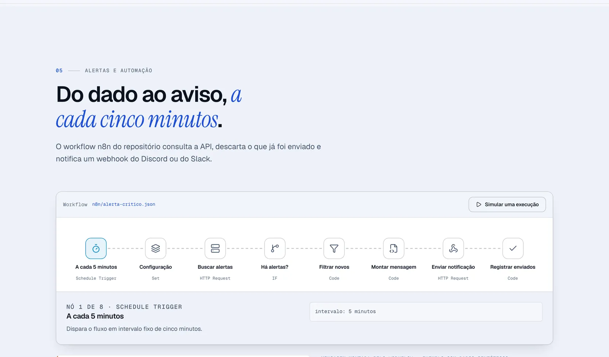
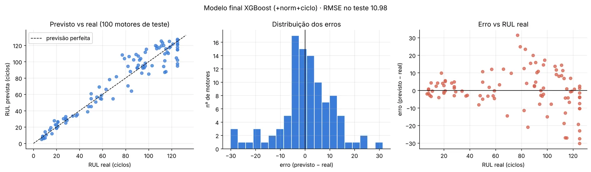
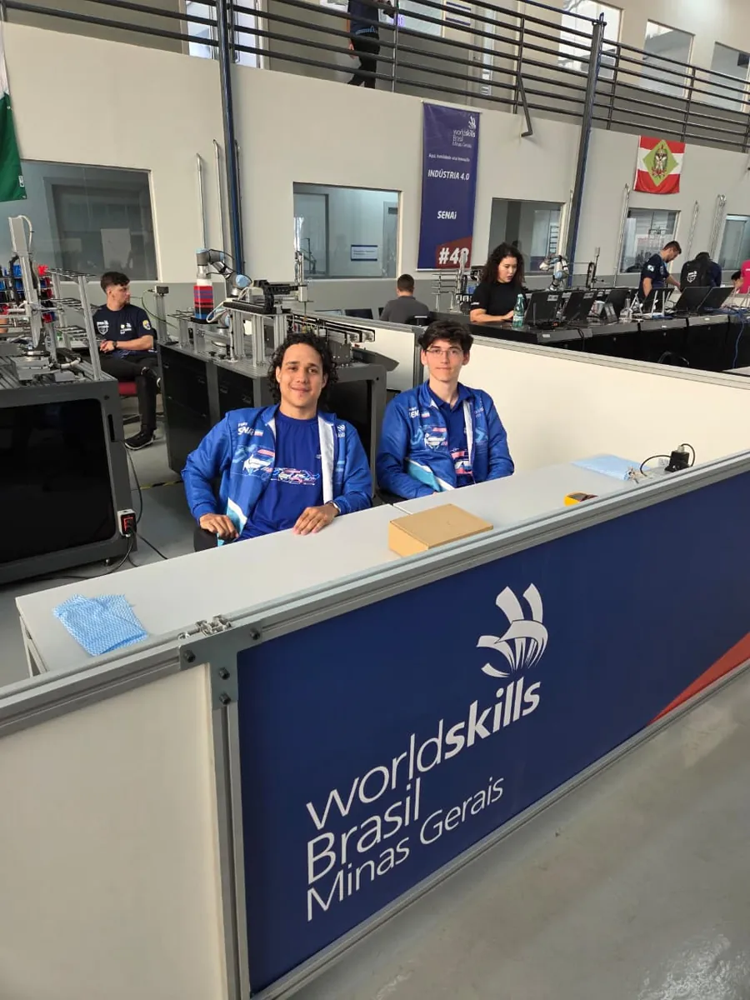

Engenharia de software, dados e IASoftware engineering, data and AI
David Évora, estudante de Ciência da Computação na UVV, em busca de estágio. Construo projetos de dados e IA com repositório público e digo onde cada resultado vale e onde não.David Évora, Computer Science student at UVV, looking for an internship. I build data and AI projects with public repositories, and I say where each result holds and where it does not.

Sobre David ÉvoraAbout David Évora
Curiosidade que vira código. Dados que viram conhecimento. Ideias que viram projetos.Curiosity that turns into code. Data that turns into knowledge. Ideas that turn into projects.
- SoftwareSoftwarePython, FastAPI, Java, Spring Boot, DockerInfoFrota SGTCC
- DadosDataSQL, MySQL, PostgreSQL, Pandas, Power BIInfoFrota C-MAPSS
- Inteligência artificialArtificial intelligenceText-to-SQL, RAG, LoRA, agentes com MCP, XGBoost, GRU, LSTM56 perguntas56 questions
Ciência da Computação na Universidade Vila Velha, em andamento. Técnico em Automação Industrial pelo SENAI-ES, que trouxe a base em sensores e sistemas físicos. Português e inglês (B2).Computer Science at Universidade Vila Velha, in progress. Industrial Automation technician from SENAI-ES, which gave me a base in sensors and physical systems. Portuguese and English (B2).

Projeto InfoFrota: inteligência para o transporte coletivoInfoFrota project: intelligence for public transport
Plataforma que junta ocupação, frota, linhas e horários da Grande Vitória. Projeto em equipe de quatro, em que sou vice-líder técnico; minha parte é o banco MySQL, a interface web e a camada de IA.A platform that brings together occupancy, fleet, lines and schedules for Greater Vitória. A team of four, where I am technical vice-lead; my part is the MySQL database, the web interface and the AI layer.
- Dados sintéticosSynthetic dataFrota, viagens, ocupação, clima e alertas são simulados. Só os rótulos das linhas vêm de um conjunto público (CC0).Fleet, trips, occupancy, weather and alerts are simulated. Only the line labels come from a public dataset (CC0).
- Projeto independenteIndependent projectNão é um sistema oficial da CETURB/ES e não tem endosso institucional.Not an official CETURB/ES system and has no institutional endorsement.
- Contagem embarcada em estudoOn-board counting under studyHardware, privacidade e precisão ainda precisam ser validados.Hardware, privacy and accuracy still need to be validated.
Site do projetoProject site RepositórioRepository Notebook no KaggleKaggle notebook Adaptador LoRALoRA adapter Artigo técnicoTechnical article


Do dado sintético ao alertaFrom synthetic data to the alert
-
Dados e bancoData and database
O banco operacional foi modelado em MySQL; o módulo de IA usa uma base SQLite sintética.The operational database was modelled in MySQL; the AI module uses a synthetic SQLite base.

-
Text-to-SQL e RAGText-to-SQL and RAG
Pergunta em português, RAG de esquema, SQL validado e SQLite somente leitura.A question in Portuguese, schema RAG, validated SQL and read-only SQLite.


-
API, agente e MCPAPI, agent and MCP
FastAPI com /perguntar, /alertas e /agente, também por servidor MCP. API e n8n sobem no Docker Compose.FastAPI with /perguntar, /alertas and /agente, also over an MCP server. API and n8n start in Docker Compose.

-
Alertas com n8nAlerts with n8n
A cada 5 minutos o n8n filtra alertas críticos e avisa por webhook; outro fluxo chama o agente.Every 5 minutes n8n filters critical alerts and notifies by webhook; another flow calls the agent.

O assistente acerta 39 de 56 perguntasThe assistant gets 39 of 56 questions right
Segunda rodada de um benchmark congelado, planejada depois de analisar os erros da primeira: RAG de esquema com um LoRA treinado com contexto recuperado. A base é sintética: o número vale para este benchmark e não mede desempenho em operação.Second round of a frozen benchmark, planned after analysing the first round's errors: schema RAG with a LoRA trained on retrieved context. The data is synthetic: the number holds for this benchmark and does not measure performance in operation.
- Primeira rodada: 36 de 56First round: 36 of 56Definida antes de qualquer ajuste: base 19, base + RAG 25, LoRA 36, LoRA + RAG 36 (64,3%). A segunda rodada soma 3 acertos, dentro do ruído com 56 perguntas.Set before any tuning: base 19, base + RAG 25, LoRA 36, LoRA + RAG 36 (64.3%). The second round adds 3 answers, within noise at 56 questions.
- Nível difícil continua baixoThe hard level is still low3 de 15 no melhor caso. A pergunta D06 tem um defeito conhecido na referência, documentado, sem ajuste da pontuação.3 of 15 in the best case. Question D06 has a known defect in its reference, documented, with no score adjustment.
Um agente que consulta o banco com ferramentasAn agent that queries the database with tools
Além da consulta única, o assistente tem um agente com Tool Calling: consulta o esquema, executa SQL e decide o próximo passo, em até 8 passos.Beyond the single query, the assistant has a Tool Calling agent: it looks up the schema, runs SQL and decides the next step, in up to 8 steps.
- 12 de 13 perguntas multietapas12 of 13 multi-step questionsgpt-oss-120b via Groq, contra 9 de 13 da consulta única, com 3,38 contra 1,77 chamadas ao modelo por pergunta. Com o avaliador original foram 9 de 13; corrigi hifens Unicode depois do resultado. Diagnóstico: 13 perguntas sintéticas, uma rodada.gpt-oss-120b via Groq, against 9 of 13 for the single query, with 3.38 against 1.77 model calls per question. With the original scorer it was 9 of 13; I fixed Unicode hyphens after the result. Diagnostic: 13 synthetic questions, one round.
- API, MCP e n8nAPI, MCP and n8nPOST /agente (FastAPI), servidor MCP e workflow n8n por HTTP, com a chave do LLM só no backend.POST /agente (FastAPI), an MCP server and an n8n workflow over HTTP, with the LLM key kept in the backend only.
- SQL somente leituraRead-only SQLO SQL gerado passa por uma guarda em 3 camadas, com testes automatizados e CI verde no GitHub Actions.Generated SQL goes through a 3-layer guard, with automated tests and green CI on GitHub Actions.
NASA C-MAPSS: vida útil restante de motoresNASA C-MAPSS: remaining useful life of engines
O modelo estima quantos ciclos ainda restam a um motor turbofan a partir de 21 sensores. O XGBoost final erra 10,98 ciclos (RMSE) no teste, em dados simulados.The model estimates how many cycles a turbofan engine has left from 21 sensors. The final XGBoost is off by 10.98 cycles (RMSE) on the test set, on simulated data.


- Dados simuladosSimulated dataUma única condição de operação. Isto não é validação em motores reais.A single operating condition. This is not validation on real engines.
- GRU e LSTM não superaramGRU and LSTM did not beat itCom 100 motores de treino, a rede não superou as variáveis feitas à mão.With 100 training engines, the network did not beat the hand-built features.
- A regressão à média continuaRegression to the mean remains50% dos motores ainda têm a vida útil superestimada, o erro mais caro em manutenção.50% of the engines still have their remaining life overestimated, the costliest error in maintenance.
SGTCC: aplicação web para o TCCSGTCC: a web app for the final-year project
Aplicação web em desenvolvimento para facilitar o TCC, a partir de um problema do grupo na UVV: o aluno não sabe se um professor pode orientar, e o professor não organiza orientandos e entregas. API REST em Java 17 e Spring Boot; atuo no backend, com apoio do Cursor.A web application in development to ease the final-year project process, from a problem the group found at UVV: students cannot tell whether a professor can advise them, and professors cannot organise advisees and deliveries. A REST API in Java 17 and Spring Boot; I work on the backend, with help from Cursor.
Repositório da equipeTeam repository
Projeto acadêmico em equipe (POO II), sem fins comerciais; o grupo entrevistou 9 pessoas. A versão hospedada ainda não está disponível, então não há demonstração pública.A team academic project (OOP II), not commercial; the group interviewed 9 people. The hosted version is not available yet, so there is no public demo.
- ImplementadoDoneLogin com JWT, cadastro e consulta de alunos e orientadores, áreas de interesse.JWT login, registration and lookup of students and advisors, areas of interest.
- Em andamentoIn progressTCC e vínculo com alunos, solicitações de orientação, controle de acesso por perfil.Final project and student link, advising requests, role-based access control.
- PlanejadoPlannedRecomendação de orientador por tema, entregas e versões, bancas e notificações.Advisor recommendation by topic, deliveries and versions, committees and notifications.
Conquistas e eventos no SENAIAchievements and events at SENAI
- 2º lugar no Grand Prix SENAI de Inovação América Latina2nd place at the SENAI Innovation Grand Prix, Latin AmericaMonitoramento em tempo real e manutenção preditiva (Festo), equipe de quatro; fui desenvolvedor de soluções. O prêmio é da equipe.Real-time monitoring and predictive maintenance (Festo), team of four; I was a solutions developer. The award belongs to the team. Ver certificadoView certificatenov 2024Nov 2024
- Competidor na WorldSkills Brasil, Seletiva NacionalCompetitor at WorldSkills Brasil, National SelectionIndústria 4.0, pelo SENAI-ES. Docker, MySQL e Grafana, com o banco ligado a um CLP via Node-RED; resposta 2x mais rápida com SQL interno.Industry 4.0, for SENAI-ES. Docker, MySQL and Grafana, with the database linked to a PLC through Node-RED; response 2x faster with internal SQL. Ver certificadoView certificateset 2025Sep 2025
- Monitor no ESX Innovation ExperienceMonitor at ESX Innovation ExperienceSenai Regional Vitória, 12 h.Senai Regional Vitória, 12 hours. Ver certificadoView certificatejul 2025Jul 2025
- Monitor no Mundo SENAIMonitor at Mundo SENAISenai Beira Mar, 4 h.Senai Beira Mar, 4 hours. Ver certificadoView certificatejun 2025Jun 2025
- Participante do Fórum IEL de GestãoAttendee at the IEL Management Forum2025



Certificados de dados, Java e IAData, Java and AI certificates
Os que têm link abrem em imagem inteira.Those with a link open as a full image.


- Google Cloud · Introduction to Generative AI (GenAI)nov 2026Nov 2026
- Claude Academy · Introduction to Model Context Protocol e Claude 101nov 2026Nov 2026
- Hugging Face · The LLM CourseEm andamentoIn progress20262026
- Oracle Academy · Java FundamentalsVer certificadoView certificatenov 2026Nov 2026
- Kaggle · Intro to Machine LearningVer certificadoView certificateout 2026Oct 2026
- Fundação Bradesco · Power BI (4 h) e Excel 2016 Avançado (30 h)20262026
- Oracle Academy · Database FoundationsVer certificadoView certificatefev 2026Feb 2026